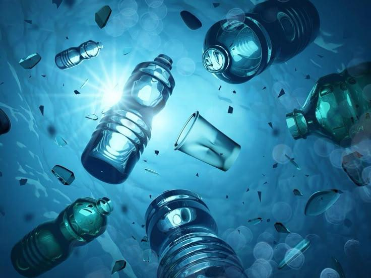
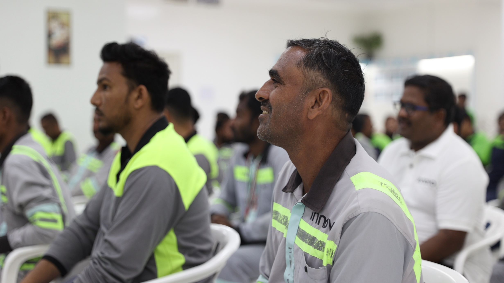
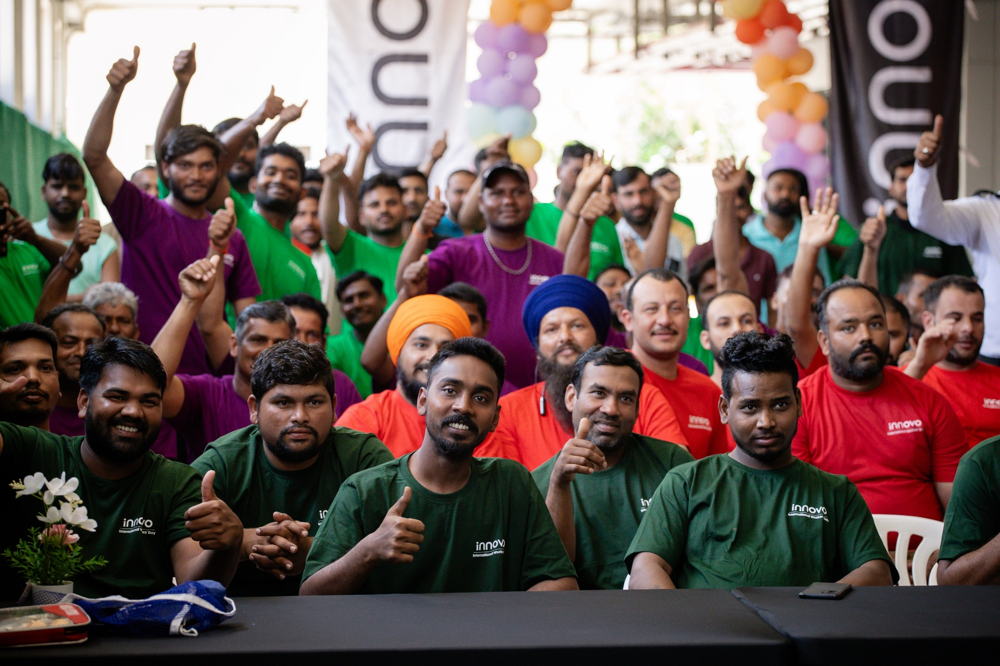
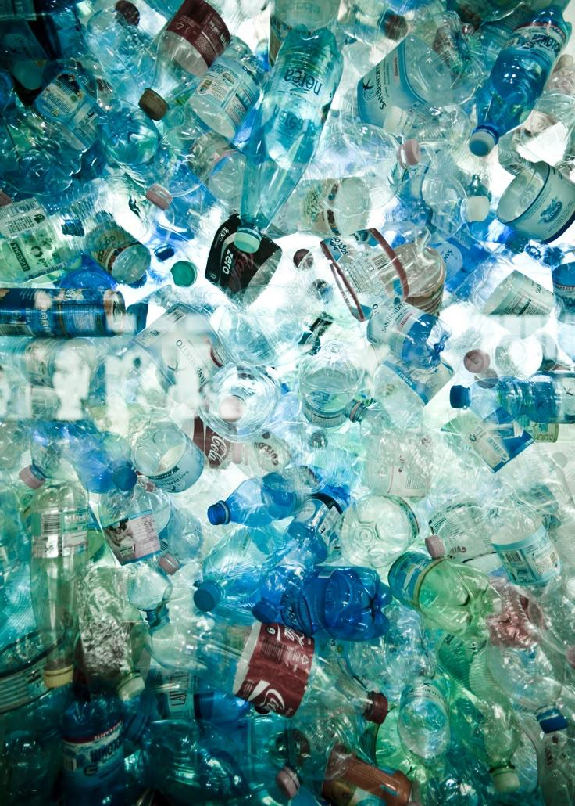
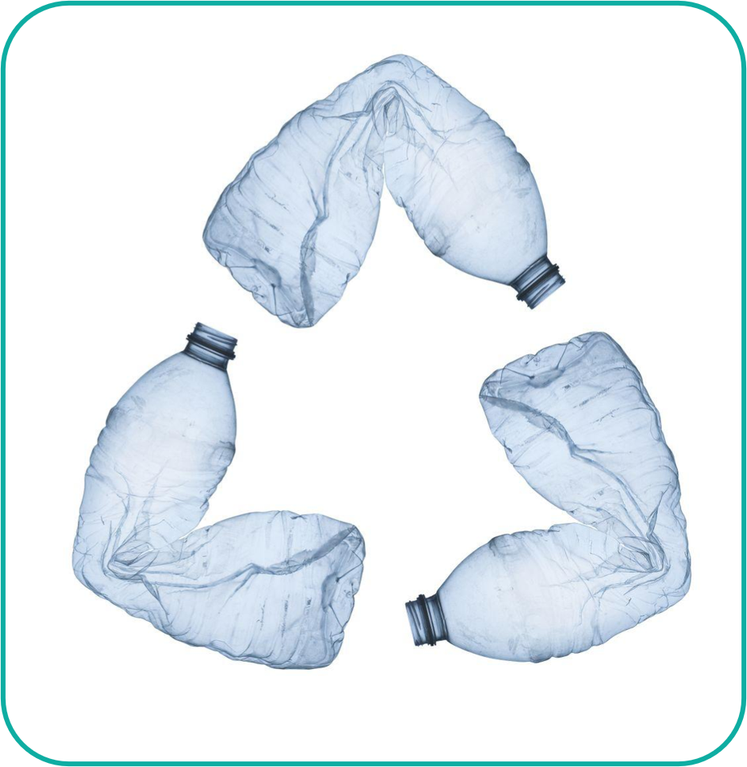

Join the movement. Reduce, Reuse, Rethink.
Use Arrow Keys to Navigate

Kick-starting the mindset change.

Taking action through collection.

Implementing practical everyday practices.
Practical Ideas: Use wood instead of plastic sheets, setup buffet for labor workers instead of packaged meals, use wooden cutlery.
Daily Update: Each site submits 1 simple update/photo weekly.

"Turning Waste into Value"
Teams collect plastic waste generated in offices and sites and transform it into something useful for the workplace.

2-5 members per submission
Announcement: 29th June, 2026
Deadline: 28th July, 2026
Send photos to:
sustainability@innovogroup.com